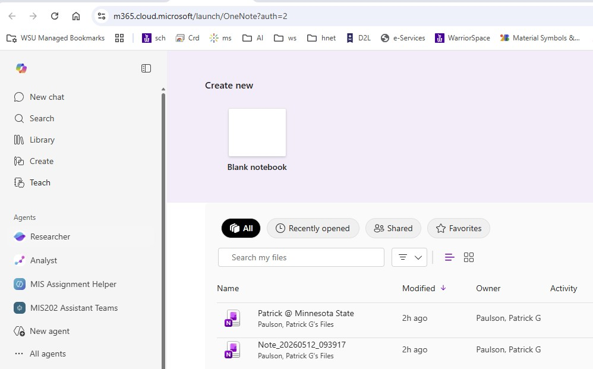
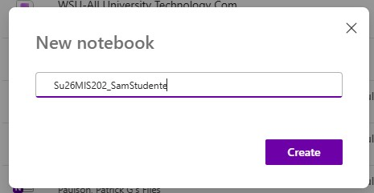
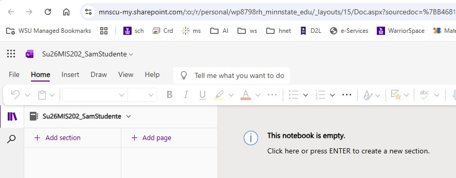
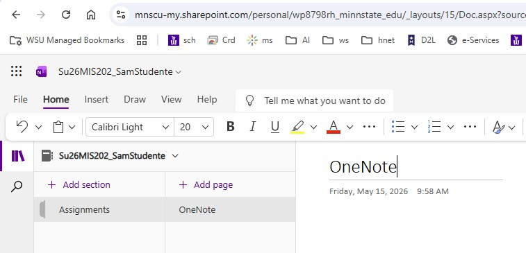
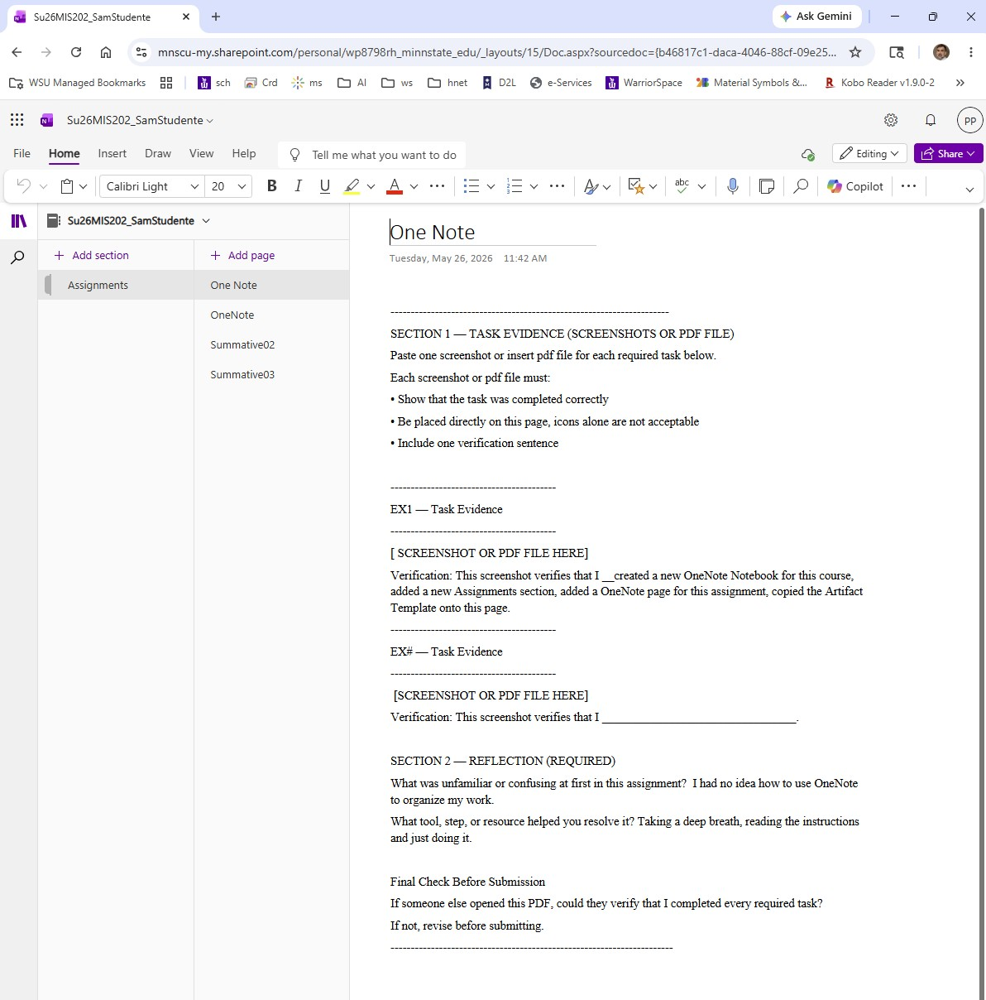
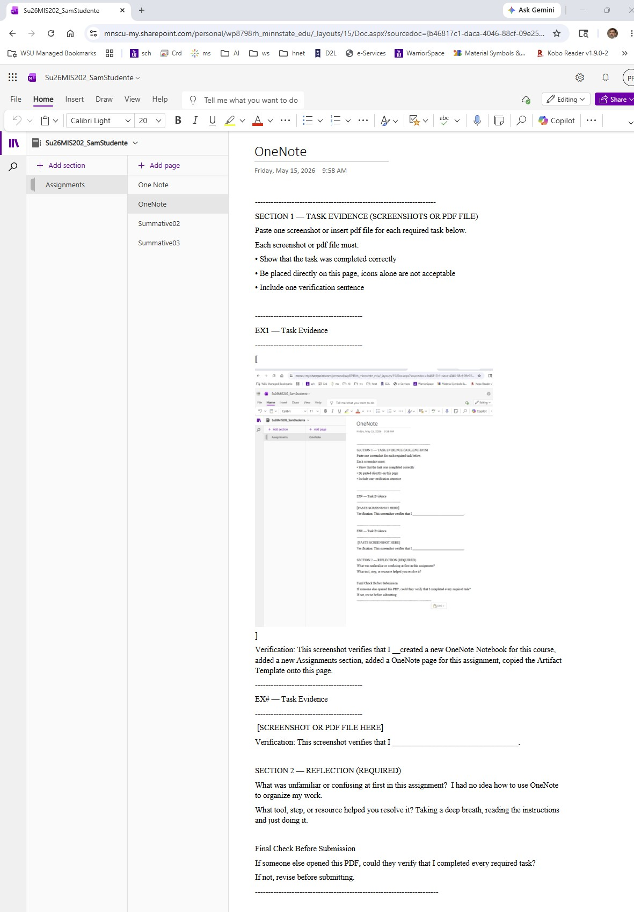

Make sure that you can access your WSU account and Office365 applications. If not, you must contact WSU Tech Support for assistance.
At the top click on 'Create new ... Blank notebook'

OneNote in Office365

New OneNote notebook
Name it 'Su26MIS202_MyName'
format: ' Semester/Year/Course_MyName '
Click the 'Create' button and your new notebook will soon appear.

New OneNote notebook
Click 'Add section' to add a new section for this, and any future assignment. In this case name it Assignments.
Click 'Add page' to add a new page in this and any future assignment. In this case name in OneNote.

New OneNote notebook with section(s) and page(s)
Copy the 'Artifact Template' and paste it onto this page.

OneNote notebook with Artifact Template
Use the Snipping Tool (or Cmd + Shift + F3 on a Mac) to make a screenshot of your new OneNote notebook, Assignments section, OneNote page, and the Artifact template.
Paste this screenshot into your OneNote page in the 'SECTION 1 TASK EVIDENCE' section, replacing the label [PASTE SCREENSHOT HERE]
In your own words write a description just below this screenshot in the 'Verification' section.
Repeat the process for each required Assignment screenshot, making copies of 'Task Evidence' as required.
When done with all the screenshots, complete 'SECTION 2-REFLECTION'
When done, your OneNote notebook should look something like this:

OneNote notebook with Completed Artifact
Choose File>Print>Print Page and choose 'Save as PDF' in a location of your choosing.
The File name will probably be the name of your OneNote notebook. That is okay. Or you can rename it for the assignment.
Upload a copy of this .pdf file to the D2L 'OneNote' Assignment folder.